Нам доверяют

а так же:
САМОЛЕТ, John Deere, Энел, КОРЕЛ ТРЕВЕЛ, БКС, Astron, Splat,
Colgate-Palmolive, Bayer, ROCS, Billa, Чибо, Якобс, Главпродукт,
Белая Дача, Черкизово, Ремит, Савушкин Продукт, Дядя Ваня,
Хортица, Major Express, Kcell.
Этапы проведения мастермайнда
Уточняющие вопросы
Об экспертах мастермайнда
Максим Горбачев
Эксперт по b2b-продажам Обладает 27-летним личным опытом продаж и управления
КЕЙСЫ МАКСИМАКошечкин Сергей
Описание указанного эксперта в несколько строк Описание указанного эксперта в несколько строк Описание указанного эксперта в несколько строк
КЕЙСЫ СЕРГЕЯКошечкин Сергей
Описание указанного эксперта в несколько строк Описание указанного эксперта в несколько строк Описание указанного эксперта в несколько строк
КЕЙСЫ СЕРГЕЯКошечкин Сергей
Описание указанного эксперта в несколько строк Описание указанного эксперта в несколько строк Описание указанного эксперта в несколько строк
КЕЙСЫ СЕРГЕЯКошечкин Сергей
Описание указанного эксперта в несколько строк Описание указанного эксперта в несколько строк Описание указанного эксперта в несколько строк
КЕЙСЫ СЕРГЕЯКошечкин Сергей
Описание указанного эксперта в несколько строк Описание указанного эксперта в несколько строк Описание указанного эксперта в несколько строк
КЕЙСЫ СЕРГЕЯКошечкин Сергей
Описание указанного эксперта в несколько строк Описание указанного эксперта в несколько строк Описание указанного эксперта в несколько строк
КЕЙСЫ СЕРГЕЯ
Кошечкин Сергей
Описание указанного эксперта в несколько строк Описание указанного эксперта в несколько строк Описание указанного эксперта в несколько строк
КЕЙСЫ СЕРГЕЯКошечкин Сергей
Описание указанного эксперта в несколько строк Описание указанного эксперта в несколько строк Описание указанного эксперта в несколько строк
КЕЙСЫ СЕРГЕЯКошечкин Сергей
Описание указанного эксперта в несколько строк Описание указанного эксперта в несколько строк Описание указанного эксперта в несколько строк
КЕЙСЫ СЕРГЕЯКошечкин Сергей
Описание указанного эксперта в несколько строк Описание указанного эксперта в несколько строк Описание указанного эксперта в несколько строк
КЕЙСЫ СЕРГЕЯКошечкин Сергей
Описание указанного эксперта в несколько строк Описание указанного эксперта в несколько строк Описание указанного эксперта в несколько строк
КЕЙСЫ СЕРГЕЯКошечкин Сергей
Описание указанного эксперта в несколько строк Описание указанного эксперта в несколько строк Описание указанного эксперта в несколько строк
КЕЙСЫ СЕРГЕЯКейсы
Компания «Эсперанто». Производство и Продажа Корпоративной одежды в сегменте Премиум. Как перестроить отдел продаж, загрузить производство и стать № 1 в нише.
Девятьярова Е.А. «Мне нужен был профессионал, который в моей
голове сделает перестройку, что в принципе и произошло. … если
раньше стояла цель загрузить производство заказами, то теперь мы
развиваем производство под настроенный поток продаж.
За 12 месяцев нашего сотрудничества компания BusinessCom подобрала
нам 6 менеджеров по продажам, 2-х руководителей отделов продаж,
2-х интернет маркетологов, 2-х бухгалтеров и одного помощника
директора. И все они продуктивно работают в компании.
Сотрудничество с Кошечкиным Сергеем помогло нам открыть дилерское
направление, создать филиал в Москве и собрать эффективный отдел
маркетинга»
Компания «Stardust» Производство и Продажа порошковой краски. Как перестроить отдел продаж и увеличить продажи на падающем рынке.
Андреа Де Чет. «Нам нужно было срочно набрать отдел продаж и превратить его из домашней структуры в боевую единицу. Очень интересна ваша технология Flash-рекрутинга. Она позволяет набрать отдел продаж за 1-2 дня. Мы получили на выходе готовый отдел продаж, это помогло нам закрыть все бреши. И на сегодняшний день у нас идет рост после продолжительного спада. На падающем рынке ошибки не прощаются».
подробнееКомпания «Meat Industry» Производство и восстановление оборудования для мясопереработки. Как проект превратить в бизнес со стабильным доходом, а менеджеров отдела продаж в партнеров.
Тройненко И.С. «У меня был небольшой проект, он развивался потихоньку. Я хотел нанять пару продавцов, на что он мне сказал: «Тебе не продавцов, тебе надо концепцию поменять. Он вытягивал из меня все знания, умения и чем дольше мы общались, тем больше я понимал, как из этого проекта создать бизнес. Проект конечный, а бизнес постоянно приносит доход и его можно детям передать. Мы не просто наняли сотрудников в отдел продаж, мы получили партнеров и через полгода мы повторили такой набор»
подробнееКоучинг руководителя отдела продаж (РОП)
Нам нужно было срочно набрать отдел продаж и превратить его из домашней структуры в боевую единицу. Очень интересна ваша технология Flash-рекрутинга. Она позволяет набрать отдел продаж за 1-2дня. Мы получили на выходе готовый отдел продаж, это помогло нам закрыть все бреши. И на сегодняшний день у нас идет рост после продолжительного спада. На падающем рынке ошибки не прощаются
подробнееОтзывы Клиентов. Канцтовары оптом
Обратился к Сергею, чтобы сделать рывок вперед. Нужен был не просто тренер, который даст тебе пару уроков, а учитель с большой буквы, который будет вести тебя дальше
подробнееОтзыв Алексея Зюзина. Synergetic
Первый конкурс нас очень сильно удивил, когда мы увидели 25 кандидатов, которые пришли к нам в офис. На второй день картина повторилась, мы буквально не могли поверить собственным глазам. Ведь мы уже почти поверили, что толковых кандидатов на рынке труда нет. Технология Flash-Рекрутинг очень экономит время руководителей, ненужные люди сразу отсеиваются
подробнееОтзыв Алексея Коновалова. Synergetic
Это очень нестандартная, необычная новая технология, но когда я
проанализировал эффект в экономии лично моего времени он просто
безумный. Если брать время только на собеседование с таким
количеством кандидатов, то у нас ушло бы 2 месяца.
Сам процесс подбора очень понравился, интересно работает экспресс
интервью настолько эта увлекательная процедура за 1 минуту
позволяет сразу отсеять всех, кто не подходит
P. S. Менеджеры, подобранные для компании в 2012 году работают в
ней по настоящее время
Интервью с Анджеем Таубергером. Preview.
Технология flash-рекрутинга впечатлила своим неординарным подходом и результатами… Подходящих кандидатов оказалось даже больше чем мы рассчитывали. По результатам последующего обучения у кандидатов через неделю пошли первые сделки. …До полуночи наши будущие коллеги в поте лица зарабатывали себе бонусные очки, и уже в марте 2010 года – нас объявили лучшим региональным дилерским центром!
подробнееИнтервью с Дмитрием Паташкиным.
Мы сами несколько месяцев не могли подобрать должных менеджеров по продажам, а персонал, подобранный силами «BusinessCom», уже через 2 недели доказал свою эффективность. Помогла этому и книга продаж, которую мы разработали совместно
подробнееПостроение отдела продаж. Отзыв о проекте
На конкурс пришло 60 человек, матерых продавцов по сравнению с которыми я был пацаном в пиджаке….за первый месяц мы увеличили продажи более чем в 2 раза с 1 200 000 до 2 500 000. У нас с партнером появилось время для запуска 3 новых направлений и мы планируем к концу года выйти на оборот в 10 000 000 рублей
подробнееFlash-Рекрутинг. Подбор менеджеров по продажам
Как работодателю мне приятно было смотреть, когда 50 человек
претендуют на работу в компании, как между ними происходит борьба,
и самое приятное в том, что очень просто, понятно
и легко выбрать одного из 50, в отличие от традиционного
подбора.Flash- Рекрутинг – это эффектно, это эффективно, особенно
понравился мне этап «продажи в полях» это инновационная технология
подбора персонала, она экономит колоссальное количество времени,
нужно только немного поменять мышление
Отдел продаж с нуля. Как его построить и как нанять сильных менеджеров по продажам
Как построить отдел продаж с нуля? Тут ведь важно чтобы он еще при этом работал и приносил прибыль. Необходимо подобрать сильных менеджеров по продажам, постороить систем, но при это многие совершают ошибки при построении отдела продаж
подробнееПодбор менеджеров по продажам в нефтехимическую отрасль. Кейс компании АВК
Нам нужны были новые люди которые быстро, оперативно могли вникнуть в суть внешне-экономической деятельности. Это должны были быть молодые ребята которые нацелены на результат, которые свободно владеют китайским и английским языком одновременно двумя, и самое главное здесь в этой профессии была пунктуальность ответственность быстрота
подробнееПроблема найма менеджеров по продажам. Отзыв Enders (кейс клиента). Точка окупаемости менеджера
Сотрудничаем с вами чуть больше года. За это время провели около 20 конкурсных подборов, подобрали более 12 человек. Самое главное преимущество это скорость. От первого дня подбора до выхода сотрудника его первый рабочий день может пройти 2-3 дня
подробнееОтзыв Акселер. Подбор персонала в компанию
Подбор персонала обычно огромная головная боль особенно, если нужны какие-то условно массовые профессии, типа там продавцы, секретари и линейный персонал и так далее с одной стороны. С другой стороны если нужны какие-то очень редкие профессии которые вот за рамками айти сложно вытащить вот Сергей помогает с решением этих вопросов.
подробнееГрупповое собеседование руководителей отдела продаж. Отзыв о подборе РОП
Это был потрясающий опыт. Удивило количество кандидатов, я не ждала что столько людей откликнется на вакансию. И самое страшно было каким образом мы можем уделить внимание каждому кандидату. Есть вот потрясающая вещь blitz, который позволил буквально за короткий промежуток времени порядка 10 минут у меня отсечь 80 процентов кандидатов
подробнееЧто делать если ваш отдел продаж ушел к конкурентам?
Первая типичная ошибка в малом бизнесе - построение отдела продаж
"на семейных отношениях". При такой модели быстро формируются так
называемые "Звезды продаж".
В итоге, менеджеры "сидят на яйцах", работая с постоянными
клиентами (которые и так купят), ничего толком не делая на рабочем
месте. Конечно, такие "звезды" не участвуют в развитии компании,
это не работа для "Их Сиятельства".
Вопросы и ответы
Вы можете задать любой вопрос, связанный с вашим бизнесом:
• Как увеличить продажи и привлекать больше клиентов?
• Как масштабировать бизнес и выйти на новый уровень?
• Какие слабые места мешают росту прибыли?
• Как оптимизировать расходы и повысить маржинальность?
• Что делать, если команда не работает эффективно?
• Как правильно развивать продукт и увеличить его ценность?
• Как оптимизировать налоги и финансы, не нарушая закон?
Всё, что важно для вас здесь и сейчас, будет разобрано
максимально глубоко. Если для ответа потребуется дополнительное
время — мы разберём этот вопрос после мастермайнда.
Обычный бизнес-разбор — это советы одного эксперта, которые чаще
всего остаются в теории.
Мастермайнд — это система, где 5-6 экспертов с разными
компетенциями выдают пошаговый план внедрения, адаптированный
под ваш бизнес.
Вы получите не просто идеи, а конкретную стратегию, с которой
сможете сразу начать действовать.
1. Только действующие предприниматели и управленцы, которые
работают с бизнесами ежедневно. Они не теоретики, а люди,
которые применяют знания на практике и знают актуальные тренды.
2. Каждый эксперт имеет 20+ лет опыта и работал с Лукойл, Bosch,
Philips, Unilever, Альфа-Банк, Heineken, Ашан и многими другими.
3. Вместо разрозненных советов вы получите структурированную
дорожную карту с чёткими шагами и приоритетами.
Это аналог совета директоров для вашей компании — только без
лишних затрат.
Мы рекомендуем подготовить 10-минутную презентацию, где нужно
чётко описать:
• Кто вы и что за бизнес у вас?
• Какую проблему хотите решить?
• Какие ресурсы у вас есть?
• Какие ограничения мешают вам двигаться дальше?
Чем точнее и глубже будет ваша проблема, тем более эффективное и
персонализированное решение вы получите.
Помимо экспертного разбора, вы получите:
• Шаблоны Google-таблиц по конкурентному анализу, исследованию
целевой аудитории.
• Шаблон базы знаний для сотрудников отдела продаж — чтобы
упростить найм и обучение.
• Готовую базу знаний для руководителя отдела продаж — чтобы
ваша команда работала системно и без хаоса.
• Ключевые контакты, инструменты, рекомендации по вашему
бизнесу.
Эти материалы сэкономят вам десятки часов работы и сотни тысяч
рублей на тестах и ошибках.
Абсолютно.
Во-первых, вы сразу увидите узкие места, которые мешают вам
зарабатывать больше.
Во-вторых, эксперты дадут идеи, которые принесут вам деньги
прямо сейчас.
В-третьих, стоимость участия в десятки раз ниже, чем ошибки,
которые вы можете допустить, не разобравшись с проблемой.
Мастермайнд — это инвестиция с окупаемостью в 1000%, потому что
вы не просто узнаёте что-то новое, а получаете план роста
бизнеса, который можно внедрять сразу.
Да, потому что за это время:
1. Вы кратко и по делу описываете свою ситуацию.
2. Эксперты находят корень проблемы и предлагают реальные
решения.
3. Вы получаете пошаговый план, а не просто идеи.
За 2 часа концентрированной работы вы получите больше, чем за
месяцы самостоятельных попыток разобраться.
Да, потому что основные принципы бизнеса универсальны:
• Как привлекать клиентов.
• Как увеличить средний чек и повторные продажи.
• Как управлять финансами и людьми.
• Как автоматизировать процессы.
Какая бы у вас ни была сфера, эксперты найдут решения,
адаптированные именно под ваш случай.
• Курсы дают информацию, но не решают вашу проблему.
• Мастермайнд даёт готовые решения именно под ваш бизнес, с
учётом вашей ситуации.
• На курсах всё теоретически, здесь — конкретика и шаги, которые
можно внедрять сразу.
Это не «общая информация», а индивидуальный разбор бизнеса с
экспертами, которые находят узкие места и дают конкретные
действия.
Если вы читаете этот ответ, значит, у вас уже есть нерешённый
вопрос.
Каждый день промедления — это упущенная прибыль, неэффективные
действия и ошибки, которые могут дорого стоить.
Представьте:
• Сколько денег и времени вы потеряете, если будете разбираться
в проблеме самостоятельно?
• Как изменится ваш бизнес, если через 2 часа у вас будет
готовый план решений?
Лучшие предприниматели не ждут, когда проблема решится сама, а
находят правильные решения и действуют.